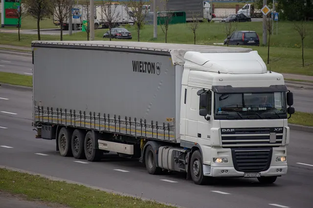
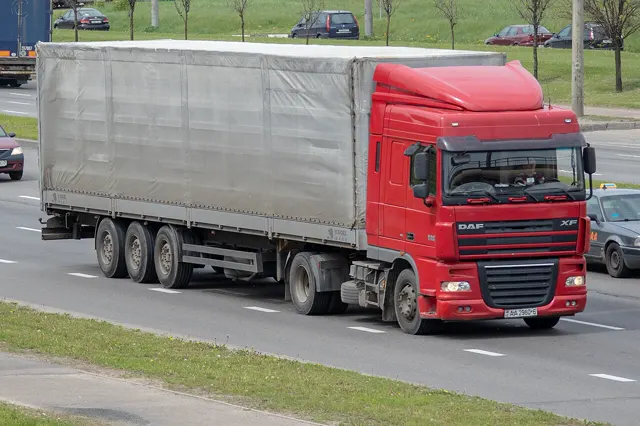
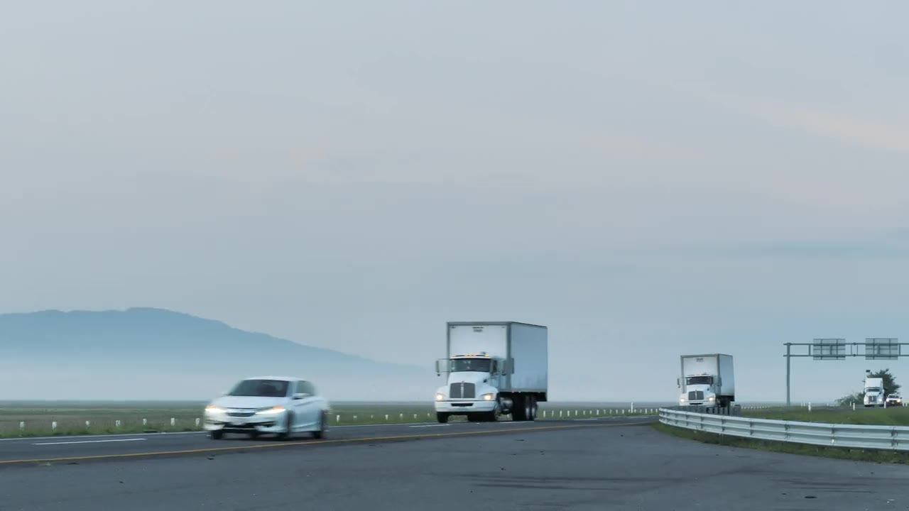

Beeldverantwoording
De foto's op deze website zijn gedeeld onder een Creative Commons-licentie of vrijgegeven in het publieke domein. De video komt van Mixkit en valt onder de Mixkit Free License. Hieronder staan per beeld de maker, de licentie en de bron.
| Beeld | Maker | Licentie | Bron | |
|---|---|---|---|---|
 | Extremely Flat Tire | MarkDoliner | CC BY-SA 2.0 | Bron |
 | Truck wheel, Merc | janebelindasmith | CC BY 2.0 | Bron |
 | Fire truck wheel changing | Onbekend | CC0 (publiek domein) | Bron |
 | Scania-trucks bij zonsopkomst | 2. | CC BY 2.0 | Bron |
 | Scania trucks | liftarn | CC BY-SA 2.0 | Bron |
 | Scania truck. | Txemari - Argazki. | CC0 (publiek domein) | Bron |
 | SCANIA truck. | Txemari - Argazki. | CC0 (publiek domein) | Bron |
 | DAF XF truck in Belarus 08 | Homoatrox | CC BY-SA 3.0 | Bron |
 | DAF XF truck in Belarus 10 | Homoatrox | CC BY-SA 3.0 | Bron |
 | Trailers on a foggy road (video) | Mixkit | Mixkit Free License | Bron |


Foto's zijn bijgesneden en gecomprimeerd, video's ingekort en zonder geluid. Lettertype: Archivo (SIL Open Font License).